CALIBRATION OF V-NOTCH
Objective:
To determinate the co-efficient of discharge of a V-Notch.
Apparatus used:
A channel with V-Notch, hook gauge, collecting tank, piezometer, etc
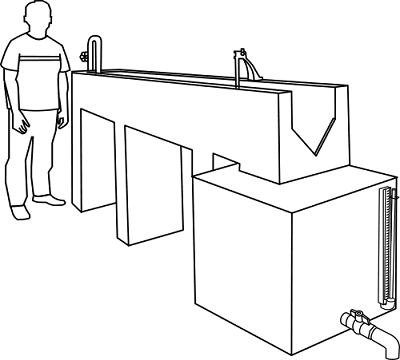
STEP
1
 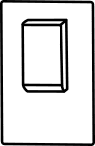
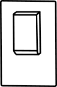


Start the pump by pressing start button.
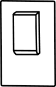
STEP
2
 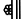
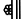
Open the inlet valve and allow the water to fill in the channel till crest level.
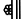
STEP 3


 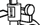
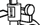
Note the theoretical discharge of the V-Notch.
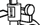
Initial reading (water level till crest) = 2.6 cm
Final reading =
Additional parameters Acceleration due to gravity (g) = 981 cm/s2θ = 90°
STEP 4


Note actual discharge reading of the V-notch from the collecting tank.
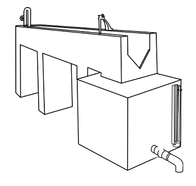
Time required by water to fill 10cm height, t =
Observation
Length of the collecting tank = 70 cm
Breadth of the collecting tank = 50 cm
Theoretical discharge, Qth =
Discharge of water, Qact =
Result
Coefficient of discharge, Cd = Qact⁄Qth =
Characteristic Curves
Graphical Solution
Slope, n =
k =
Coefficient of discharge, Cd =
Trial =


© 2016 - SOLVE - The Virtual Lab @ NITK Surathkal, Department of Water Resources & Ocean Engineering